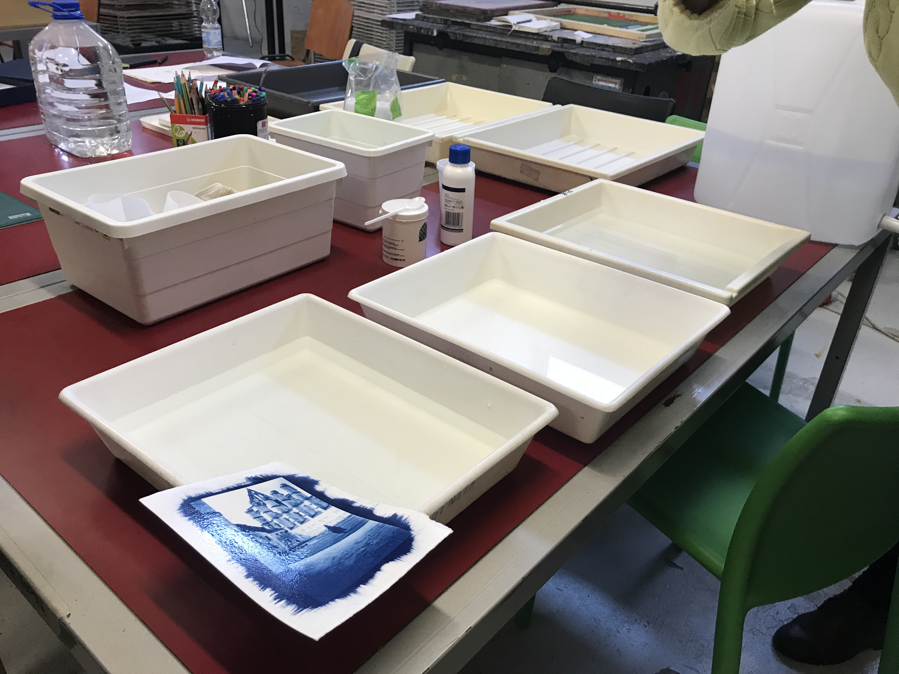
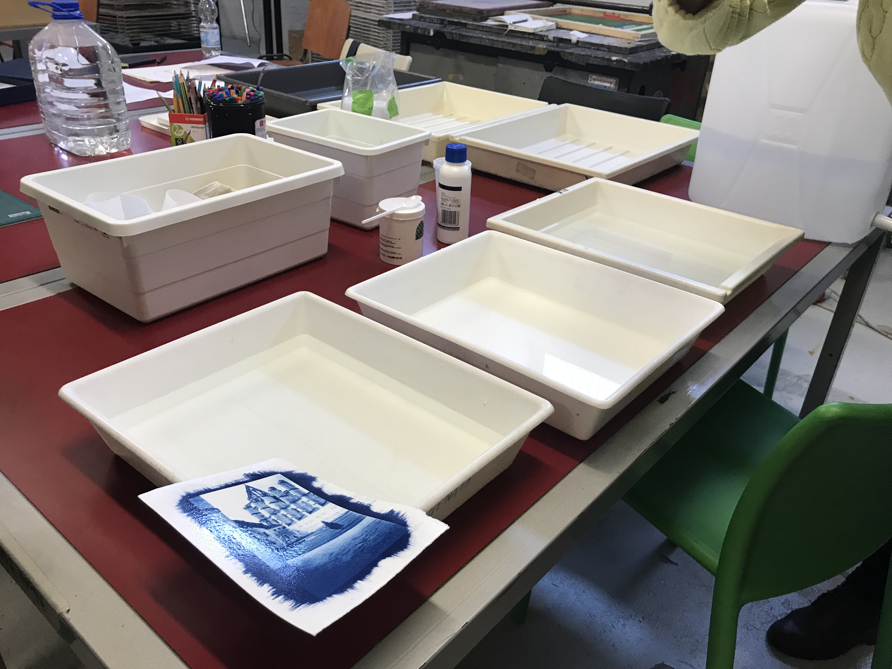

Il Print Club Torino è una a.p.s (associazione di promozione sociale), che offre ai soci tesserati l’opportunità di usufruire degli spazi e delle attrezzature per realizzare un proprio progetto grafico o artistico, oltre a organizzare mostre e workshop didattici.
Si trova in via Agostino da Montefeltro 2, all’interno del Toolbox, una struttura adibita al cooworking. Dispone di un laboratorio principale, che contiene la maggior parte dei macchinari e degli strumenti (stampanti laser ed inkjet, taglierine, cordonatrice, macchine da cucito, etc.), una sala di incisione lastre, un paio di magazzini ed un’altra stanza che contiene la particolare stampante giapponese Risograph ed un plotter da 60 pollici.
L’organigramma dell’azienda è formato, in ordine, dal rappresentante legale Fabio Guida, dalla direttrice Ilaria Reposo, e dalle due responsabili di laboratorio, Luisella Cresto e Francesca Morea. Il loro mercato attuale è formato da una grande mole di studenti liceali e universitari e da professionisti grafici o semplici appassionati di manualità, creatività e artigianalità.


(serigrafia, illustrazione, cianotipia, vernice molle, e molto altro)
 
